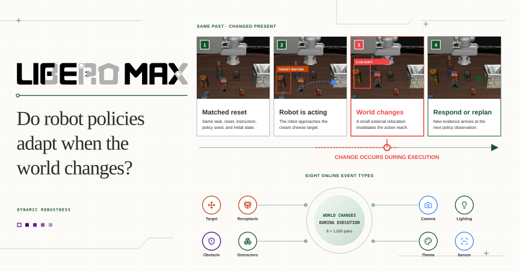
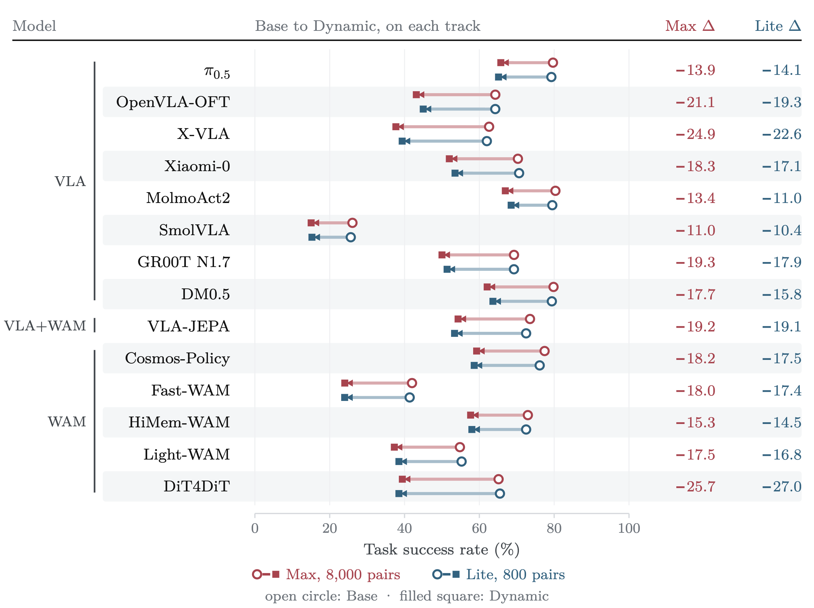
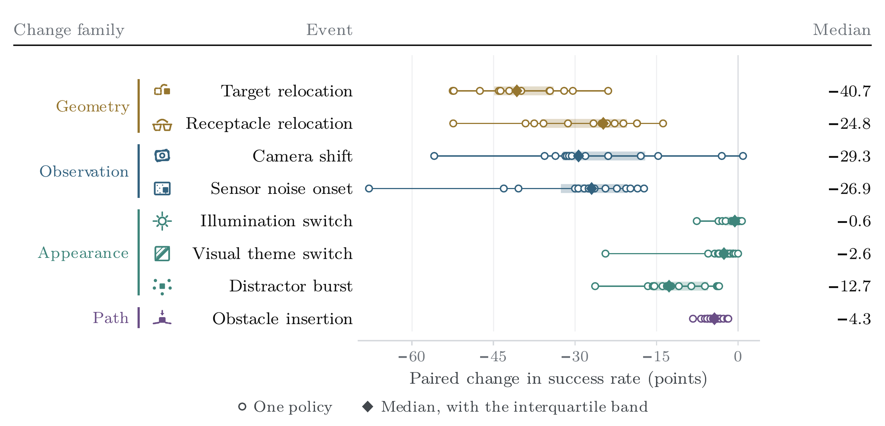
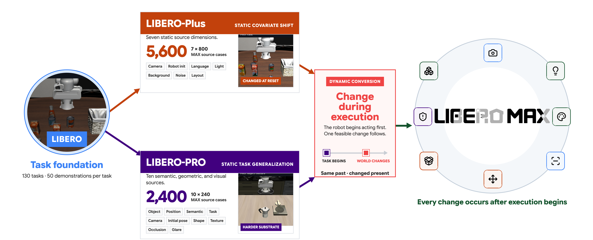

STATIC ROBUSTNESS
The shift is visible before action begins.
shift→observe→act
LIBERO-Plus and LIBERO-PRO test generalization from a shifted reset.

DYNAMIC ROBUSTNESS FOR ROBOT POLICIES · 2026
LIBERO-MAX changes the environment after a robot has already begun acting. Every Dynamic rollout is matched to a Base control with the same task, reset, policy seed, and action prefix.
the evaluation gap
The paired design isolates the effect of an online change from initial task difficulty.
STATIC ROBUSTNESS
LIBERO-Plus and LIBERO-PRO test generalization from a shifted reset.
DYNAMIC ROBUSTNESS
LIBERO-MAX measures whether task success is preserved after the event. It does not infer internal detection or deliberate replanning.
the frozen main track
1,000 matched cases per event type

The manipulated object moves after approach.

The destination moves while the task stays feasible.

The viewpoint changes while the robot is acting.

Noise and occlusion begin after execution starts.

Scene lighting changes abruptly.

The scene appearance changes online.

Five irrelevant objects enter the active support.

A new obstacle blocks the approach region.
main results
Fourteen complete evaluations use the same 8,000 matched Base and Dynamic pairs.
percentage-point success loss
after one controlled online event. Among Base successes, 20.8% to 56.1% become failures in Dynamic.
The fixed 800-pair LIBERO-MAX Lite subset estimates every reported rate within 2.4 points of Max and preserves 88 of 91 pairwise Dynamic orderings.

where policies break
Relocation, viewpoint change, and sensor corruption reveal shared weaknesses. Policies that tolerate appearance changes can still fail after target or receptacle relocation.

benchmark construction
LIBERO-MAX keeps the task substrate fixed, preserves the executed action prefix, and introduces one feasible change only after the robot begins acting.

8,000 source cases become 8,000 matched dynamic evaluations. The frozen track combines 5,600 Plus-derived and 2,400 PRO-derived cases, then applies one feasible event during policy execution.
open benchmark
The frozen manifest, source revisions, validation, evaluation launchers, and automated tests are released with the benchmark.
$ git clone https://github.com/yunbeizhang/LIBERO-MAX.git
$ cd LIBERO-MAX
$ python3 -m venv .venv
$ source .venv/bin/activate
$ pip install -e .
$ make validatecitation
This temporary entry identifies the repository and dataset release. We will replace it with the verified paper BibTeX when the manuscript is public.
@misc{liberomax,
title = {LIBERO-MAX: Do Robot Policies Adapt When the World Changes?},
howpublished = {\url{https://github.com/yunbeizhang/LIBERO-MAX}},
note = {Dataset. Paper forthcoming.}
}